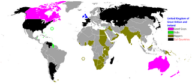

De: La Frikipedia, la enciclopedia extremadamente seria.
De: La Frikipedia, la enciclopedia extremadamente seria. De: La Frikipedia, la enciclopedia extremadamente seria.
| De la serie imperios antiguos: | |||||
| Royal English Empire | |||||
| |||||
| Lema: It's Tea Time | |||||
| Himno: God saves the fat | |||||
| 
| |||||
| Capital(es) | Londres | ||||
| Mayor ciudad | Londres, Edimburgo | ||||
| Lenguas oficiales | Inglés, Rich English | ||||
| Religión oficial | La que se le antoje al rey | ||||
| Gobierno | Monarquía Amanerada | ||||
| Rey Real | Enrique <inserte numero romano aquí > | ||||
| Fecha de fundación | En el año 1000 d.C. | ||||
| Caída | En la Primera Guerra Mundial | ||||
| Edad de oro | En la era de los piratas | ||||
| Periodo de Estancamiento o reseción | En la Guerra de los Cien Años | ||||
| Máxima Extensión | El Mundo | ||||
| Forma de economía | Todo el dinero es para la clase noble y los santos reyes | ||||
| Estados que se despacho | Norteamérica, África y Asia | ||||
| Población calculada | 100000000 inútiles y 20 soldados | ||||
| Moneda | La libra esterlina | ||||
| Zona horaria | Zona Cero | ||||
| Legado(s) | La Commonwealth Británica, que todo el mundo hable inglés | ||||
| ¿Por que se vino abajo? | Ciertas personas lo dejaron derribar | ||||
| | |||||
«Libertad!!!»
~ William Wallace contra el Imperio Británico
«Sangre!!!!»
~ Ejercito inglés en cada batalla contra sus enemigos
Llamamos Imperio Británico a todas las zonas que antes eran propiedad de la Corona Inglesa West India Trading Company antes de la Primera Guerra Mundial, cuando las colonias se despertaron y declararon su independencia de una nación que estaba muy atareada luchando contra los alemanes. Mucho después todas las ex-colonias del Reino Unido a excepción de los Estados Texanos de América volvieron a unirse conformando la Commonwealth Británica que viene tener la misma expansión que el antiguo imperio.
La historia del Imperio Británico es larga y penosa y probablemente se extiende desde el momento en el que la tercera división de el ejercito wombat destruyó todos los fortines del ejército romano en las islas británicas hasta que Hitler manipuló cual Sasori el ejercito alemán para atacar Inglaterra.
Los ingleses estaban recién independizados de la malévola dictadura romana, así que su vasto imperio se limitaba a Londres y un restaurante de pescado con patatas en Manchester. Para expandir sus dominios el Rey Arturo invocó a todos los caballeros de la mesa redonda y los envió a diferentes partes de la Gran Bretaña. Sir Lancelot junto con Sir Percival pelean contra William Wallace y el conserje Willy para conquistar Escocia y las destilerías de whisky, mientras que Sir Gawain se encargaba de controlar la plaga de duendes en Irlanda.
Finalmente después de sus sangrientas batallas respectivas ambos regresan triunfales a Inglaterra para mostrar el gran botín que habían recolectado en tierras lejanas. Luego el Rey Arturo convoca a Sir Dagonet para que conquiste la Suciedad de almas, pero muere en el intento asesinado por un león de peluche parlante.
Por algunos motivos que la historia no quiere revelar, después del reinado de Guillermo el Conquistador Inglaterra y Francia son rivales. Tal vez porque Guillermo era un duque en Francia y un rey en Inglaterra y por tanto Inglaterra pertenecía a los alérgicos al agua. Con este hecho comenzó la matanza de abogados mas grande de la historia, pues todos los reyes de ambos países recurrían a leyes que ellos mismos habían inventado para dominar el mundo.
La guerra se resumía la mayor parte del tiempo a la pelea de Scooby Doo descubriría que el fantasma era el Rey de Francia.
Como el Imperio Español comenzaban a tener éxito en eso de la colonización, los ingleses decidieron no quedarse atrás y fue así como el Rey Enrique firmo un decreto para mandar lo mejor de su país a los continentes americano, asiático y africano: inmigrantes irlandeses, católicos, protestantes y piratas.
Cada continente tuvo sus propias experiencias porque en todos habitaban muchos negros muchas tribus diferentes. En América habitaban los McPielrojas, en Asia los fabricantes de tenis y en África los Tostao's Shwilii, añadido al hecho de que Inglaterra quedaba mas lejos de unas colonias que de otras y tenia que controlarlas de distintas maneras.
El evidente éxito del Imperio Español robando, matando y violando colonizando en América le dio muchos celos a los ingleses, así que mandaron generosamente a todas las personas que sobraban allá en un barco hacia el nuevo mundo (básicamente canis y testigos de anchova). Como las tierras que ellos encontraron no tenían oro, plata o bonos de petróleo, no les quedó otro remedio que comenzar a trabajar en la tierra, a veces en alianza con los indios, pero en la mayoría de los casos asesinándolos despiadadamente.
No conformes con eso la corona inglesa comienza a contratar a honrosas compañías de piratas comerciales para que conquisten las islas del Caribe por ellos. El contrato también establecía que los corsarios (término para adornar piratas) tenían autorización para robar, saquear y violar a los españoles siempre y cuando compartieran el botín con Inglaterra. Misteriosamente, la ultima acción fue la mas ejecutada por los corsarios (¿no que eran machos?).
Todo se fue al caño por culpa de los hijos de aquellos ingleses que sufrían falta de identidad, pues para empezar tenían reuniones clandestinas en sitios conocidos como bares y hablaban de sus ideales de libertad y justicia, cosa que desagradaba a los ingleses leales a un tipo gordo que vestía con pieles de animales extintos. Luego estalló una guerra que terminó echando a los ingleses de América, pero el Imperio Británico todavía tenía a Asia y África
«Por supuesto que los ingleses blanquitos no se metieron con ninguna otra raza por su color de piel o el tamaño de su... cabeza... Al contrario, les ayudaban a subir al autobús, les cuidaban cuando estaban malitos, les daban de comer y siempre que podían los puteaban hasta la muerte y con mucha saña.»
~ Rey Enriquito sobre la colonización en África
Los ingleses comenzaron a invadir África cuando los indios americanos murieron por diferentes enfermedades, pues necesitaban esclavos para sobrevivir y no tener que trabajar en sus arduas labores.
Comenzaron invadiendo el norte de África para robarle todo el opio posible a los nativos marroquíes, luego Egipto para jugar a los turistas y tomarse unos retratos con las pirámides de Keops, siguieron avanzando hacia la espesa selva negra africana donde lucharon contra la tribu Uga-Uga, los Massai y Tarzán, todo por la ambición de los ingleses para conseguir oro, madera, plata y mucho opio.
En Asia los n00bs cometen el error de decir que los ingleses solo conquistaron la India, cuando los estirados también conquistaron parte de China, Birmania, Taiwan, Vietnam e hicieron un intento de conquistar Japón que fue detenido por la organización Akatsuki, más concretamente por nuestro Dios y Señor Todopoderoso Pain quien derrotó a los ingleses con dos palabras. Extrañamente solo vinieron a este continente por té.
Todo se fue al carajo cuando los colonizados se cansaron de tanta tontería y se alzaron en armas contra los guiris. El principal líder de la rebelión fue Ghandi con su lema "El único inglés bueno es el inglés muerto" y su uso masivo de la violencia gratuita. Pero la persona que más apoyó la rebelión fue Martin Luther King, sus discursos largos sobre la igualdad de raza y las oportunidades que los niggers afroamericanos tenían de vivir justamente inspiraron a todos los africanos a matar británicos debiluchos. Gran Bretaña sofocó estas rebeliones porque no sabia hacer otra cosa y era lo que mandaba la Reina Victoria.
Sin embargo los nativos no consiguieron hacer retroceder a los colonizadores hasta que estalló la Segunda Guerra Mundial. La polución se cargó la capa de ozono e hizo que muchos de los ingleses murieron por exceso de sol, añadido al hecho de que los ingleses estaban encerrados en un montón de túneles para metro y ya no les importaban las colonias. Sin embargo los nativos de las colonias eran estúpidos y se unieron a la Commonwealth inglesa para seguir siendo dominados.
Se calcula que el Imperio Británico se extendía desde una punta a otra del imperio, más o menos. Pero por dar un número de verdad diremos que ocupaba un gritón de kilómetros cuadrados. Estaba presente en los cinco continentes y se preparaban para conquistar la Atlántida cuando la Segunda Guerra Mundial los ocupó en otra clase de asuntos.
Actualmente planean re-expandirse a través de la exploración espacial, pero por ahora son extremadamente mediocres en ese campo y no lo pueden hacer
En América aprovecharon para vivir en el interior de la Estatua de la Libertad que habían construido los indios. Además le robaron algunas islas a ingenuos americanos (no los voy a mencionar, pero tienen una hoja de maple en la bandera). Aquí vivían principalmente de exportar productos que en un principio no servían para nada y todavía no lo hacen, pero que eran un lujo para los británicos y los hacían sentir importantes. Solo tomaron las Antillas, Canadá y Gringolandia
Ocuparon toda la India después de echar a los tigres de bengala y asentaron sus posaderas en toda la península. Desde la India establecieron su base de operaciones para conquistar el resto de Asia, o mejor dicho lo que estaba alrededor de China. Desde esos países que no eran tan grandes comenzó la expansión y conquista de China, que a cambio de su libertad a medias le ofreció a los británicos Hong Kong, 2 kilos de opio y 10 toneladas de té. Por supuesto ellos aceptaron.
En Marte se hicieron los dueños de todo el planeta así como de sus lunas Fobos y Deimos donde planeaban hacer un parque temático sobre demonios de otra dimensión. El proyecto no tuvo mucho éxito porque cuando comenzaron a construir el parque descubrieron que no valía la pena una montaña rusa sin gravedad y eso les jodía todo el proyecto del parque. Luego trataron de usar Marte como base defensiva espacial pero la perdieron rápidamente a manos de los Sith, aunque posteriormente la recuperaron en los eventos de Star Wars VII.
En África ocuparon gran parte de el territorio, empezando por las Islas Vírgenes que quedan en el Atlántico. Acá fue el primer lugar donde cultivaron el racismo. Para empezar llamaron a la selva "Selva Negra" y el gentilicio oficial de todos los africanos era "Conguitos", cosa que no les agradaba a los africanos negros ni a los africanos del norte que son árabes. La gran novedad en este continente para los ingleses fue el hecho de que había oro en todas partes y como toda civilización que se precie de ser avanzada prefieren los objetos que brillan a la comida.
Los ingleses eran extremadamente apegados a sus creencias religiosas, sobre todo la realeza, tanto así que todos los reyes ingleses antes de Enrique VII modificaban las reglas religiosas a su antojo y cuando el anterior Enrique no pudo fundo su propia Iglesia para divorciarse de su bellísima esposa española. Luego formo un comité militar para matar a todos los católicos en Inglaterra por lo cual estos terminaron huyendo a Irlanda, donde vivirían en paz con los duendes.
Autor(es):